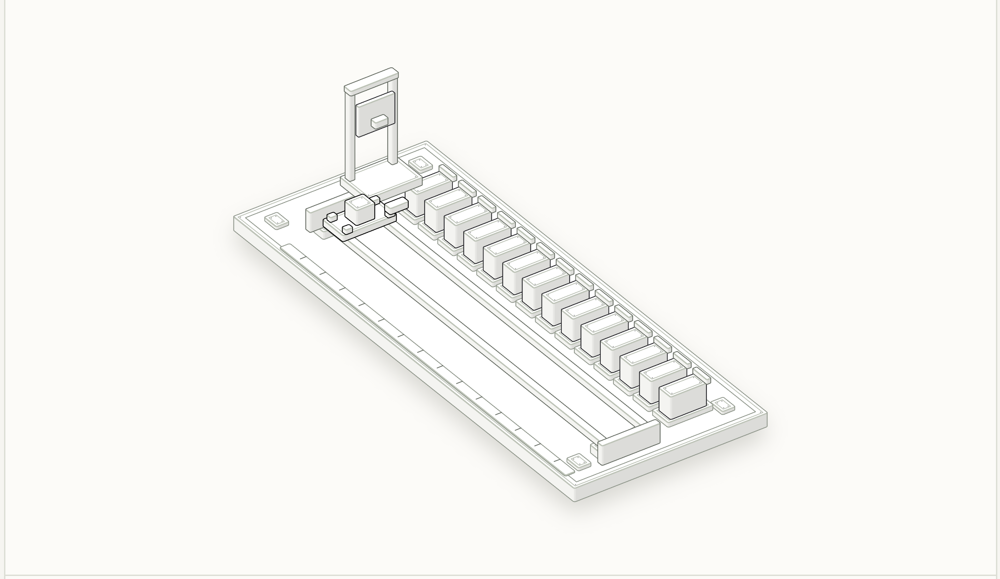
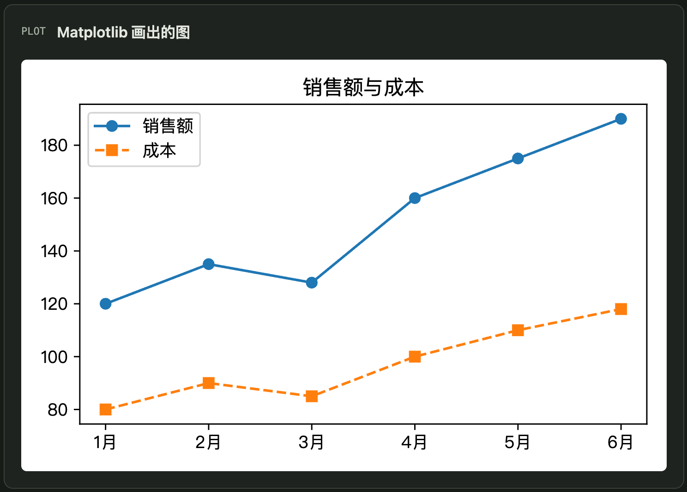

选择一个问题
打开实验室，在预设主题或示例中，找到想弄懂的操作与概念。
A SMALL LAB FOR BIG IDEAS
让抽象的 Python 概念，成为可以观察的过程。
移动、选择、逐步播放，在十个互动实验室里，
从“记住语法”走向“理解发生了什么”。
无需安装 Python · 浏览器直接打开 · 可离线使用

THE LAB COLLECTION
可以按顺序入门，
也可以从一个卡住你的概念开始。
10 个实验室
变量、对象与类型，观察名称绑定以及 bool 与 int 的关系。
进入实验室 ↗看见索引、嵌套、共享引用和生成式的数据流。
进入实验室 ↗理解不可变序列、嵌套对象与类型转换。
进入实验室 ↗从字符与索引出发，探索拆分、拼接与文本变换。
进入实验室 ↗通过匹配过程和结果，理解文本搜索与模式规则。
进入实验室 ↗逐步跟踪条件、循环、continue 等控制流。
进入实验室 ↗探索函数调用、参数、组合与排序示例。
进入实验室 ↗沿着程序路径，理解异常传播、处理与断言。
进入实验室 ↗用可视化示例观察缓冲、文件操作与 CSV 数据。
进入实验室 ↗通过 25 个预设示例，观察 pandas 表格操作与 Matplotlib 图表。
进入实验室 ↗没有找到匹配的实验室。试试其他关键词或选择“全部”。
WATCH. CHANGE. UNDERSTAND.
先预测，再观察，再解释。
每个实验室都可以成为课堂演示，
也可以是你自己的课后小实验。
打开实验室，在预设主题或示例中，找到想弄懂的操作与概念。
通过控件改变选项，逐步跟踪状态、代码与输出之间的关系。具体操作见各实验室说明。
解释为什么出现这个结果，再把示例放入自己的 Python 环境中验证、修改和扩展。
FROM LANGUAGE TO DATA
读取表格、筛选排序、分组统计，再到可视化。数据分析实验室内置 25 个预设示例，表格和图表来自 pandas 与 Matplotlib 的预先运行结果。
进入数据分析与可视化实验室 ↗
KEEP A LAB IN YOUR BAG
下载项目 ZIP 并解压，双击首页或任一实验室的 index.html 即可学习。每个实验室的成品页面均为自包含 HTML，便于课堂与离线使用。
下载完整项目 ZIP ↓这是预设示例的互动教学演示，浏览器不执行任意 Python 代码。学习时请结合实际 Python 环境验证。
源码、构建脚本、真值数据与已有验证截图一起公开。重新构建需要 Node.js；生成 Python 真值数据所需依赖按各实验室说明配置。
阅读项目说明 ↗